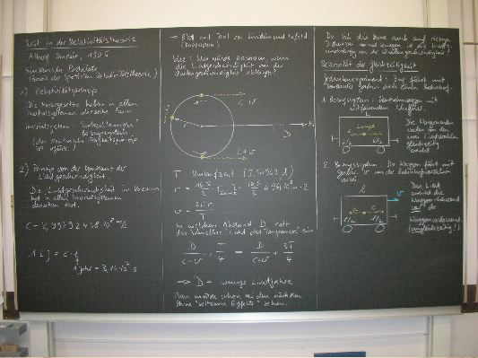
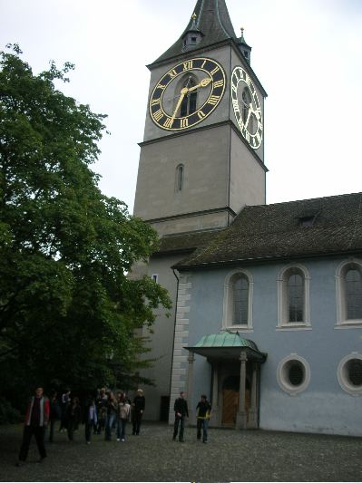
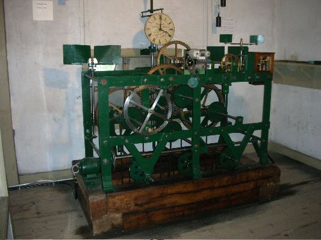
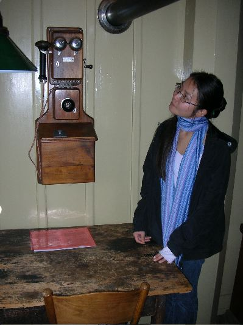
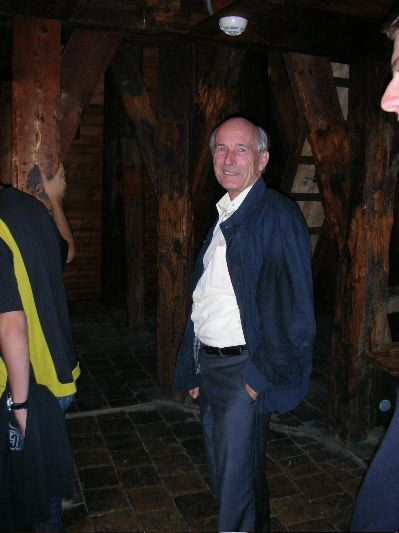
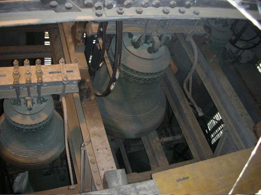
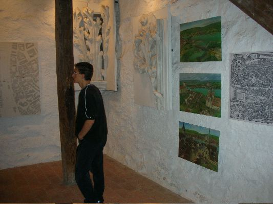
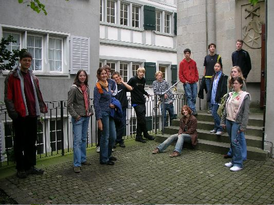
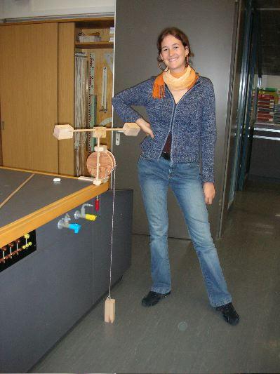
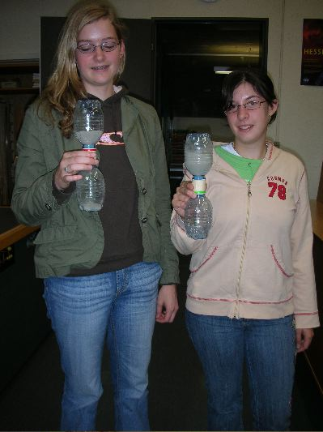

Bau einer Wasseruhr. Wasseruhren wurden bei den alten Griechen verwendet, um die Redezeit von Politikern und Juristen zu beschränken. Eine segensreiche Erfindung!

Martin Lieberherr führt in die Geheimnisse der Zeit in der Speziellen Relativitätstheorie Albert Einsteins ein. Nach zwei Lektionen wissen alle, dass der Aussage, zwei Ereignisse fänden gleichzeitig statt, mit Vorsicht begegnet werden muss.

Exkursion auf den Turm von Sankt Peter. Das Zifferblatt mit 8.7 m Durchmesser ist das grösste an einer Kirche in Europa. Über Generationen bestimmte diese Uhr die Zeit in der Stadt Zürich.

Das alte, mechanische Uhrwerk der Turmuhr von Sankt Peter. Über eine Welle wurden alle (4x2) Zeiger angetrieben. Heute werden die Zeiger direkt mit funkgesteuerten Uhrenmotoren gedreht (immer noch sprungweise). Das alte Werk ist nur noch ein Ausstellungsstück.

Das alte Telefon im "Turmstübchen" des letzten Feuerwächters der Stadt Zürich.

Andres Boller, Pfarrer von St. Peter, führte uns liebenswerterweise durch den Turm.

Der Stundenschlag dieser Glocken bringt die Uhrzeit in alle Gassen der Altstadt.

Schautafeln im kleinen Turmmuseum. Sie beschreiben die Geschichte der Stadt und des Kirchenbaus.

Die ganze Gruppe vor dem Kirchturm.

Eigenbau einer Spindelhemmung (Teil einer Waagbalkenuhr). Der Mechanismus funktioniert gut, wie man in im Film Uhr.mov (QuickTime Movie, 404 kByte) selbst sehen kann.

Vorführung ihrer selbst gebauten Sanduhren. Leider war der Sand nicht optimal, denn er floss pulsierend.

Und ich habe diese Bildchen gemacht.
30. September 2006, M. Lieberherr